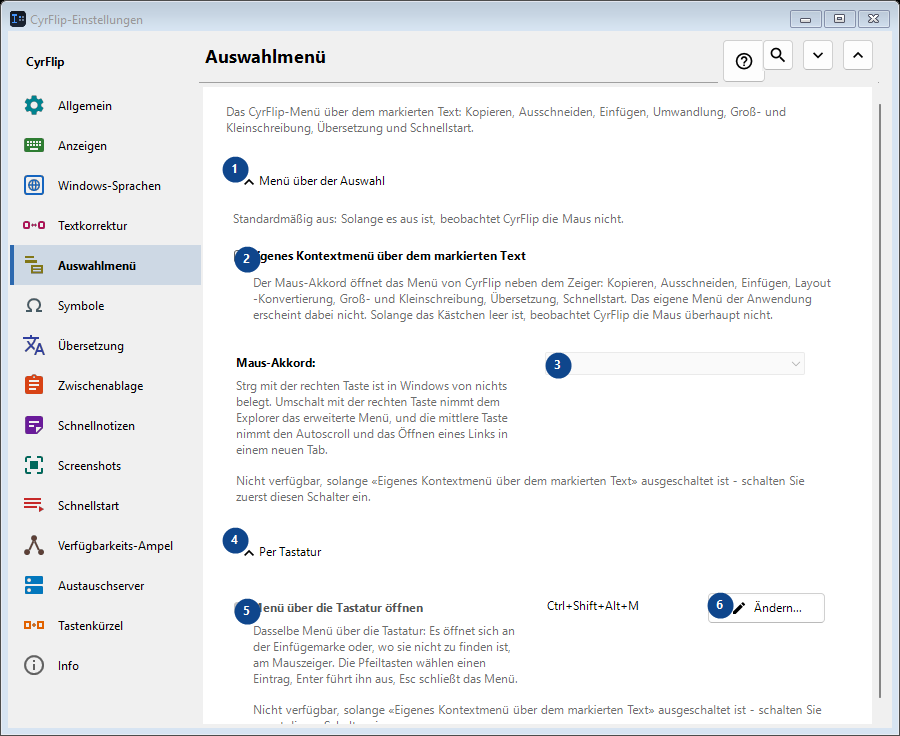
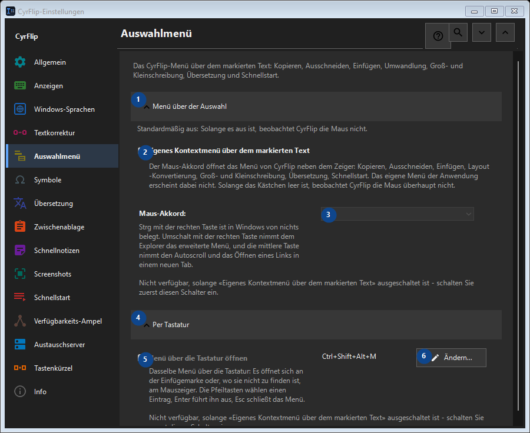

Auswahlmenü
Zweck
Das CyrFlip-Menü über dem markierten Text: Kopieren, Ausschneiden, Einfügen, Umwandlung, Groß- und Kleinschreibung, Übersetzung und Schnellstart.


Reihenfolge
Einstellungen gelten sofort. Eine feste Reihenfolge ist nicht nötig; nutzen Sie die Gruppen unten.
Elemente
1. Menü über der Auswahl
Nutzen Sie diesen Befehl für die genannte Aktion. Lesen Sie eine Bestätigung, bevor Sie zustimmen.
Ihre Tastenkürzel2. Eigenes Kontextmenü über dem markierten Text
Der Maus-Akkord öffnet das Menü von CyrFlip neben dem Zeiger: Kopieren, Ausschneiden, Einfügen, Layout-Konvertierung, Groß- und Kleinschreibung, Übersetzung, Schnellstart. Das eigene Menü der Anwendung erscheint dabei nicht. Solange das Kästchen leer ist, beobachtet CyrFlip die Maus überhaupt nicht.
Ihre Tastenkürzel3. Maus-Akkord
Nicht verfügbar, solange «Eigenes Kontextmenü über dem markierten Text» ausgeschaltet ist - schalten Sie zuerst diesen Schalter ein. Dieses Element ist derzeit nicht verfügbar. Aktivieren Sie zuerst die Funktion oder wählen Sie einen Eintrag.
Ihre Tastenkürzel4. Per Tastatur
Nutzen Sie diesen Befehl für die genannte Aktion. Lesen Sie eine Bestätigung, bevor Sie zustimmen.
Ihre Tastenkürzel5. Menü über die Tastatur öffnen
Nicht verfügbar, solange «Eigenes Kontextmenü über dem markierten Text» ausgeschaltet ist - schalten Sie zuerst diesen Schalter ein. Dieses Element ist derzeit nicht verfügbar. Aktivieren Sie zuerst die Funktion oder wählen Sie einen Eintrag.
Ihre Tastenkürzel6. Ändern - Menü über die Tastatur öffnen
Nutzen Sie diesen Befehl für die genannte Aktion. Lesen Sie eine Bestätigung, bevor Sie zustimmen.
Ihre Tastenkürzel